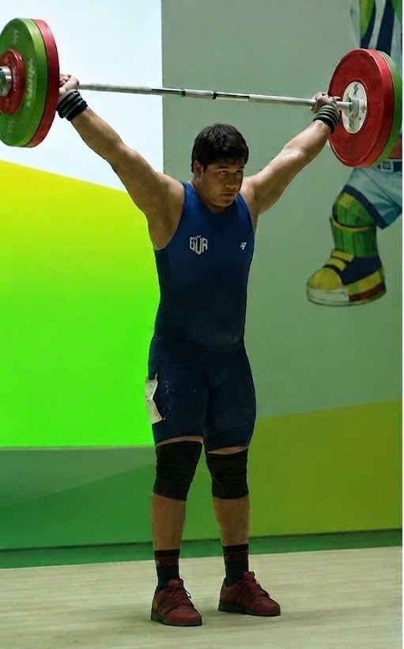
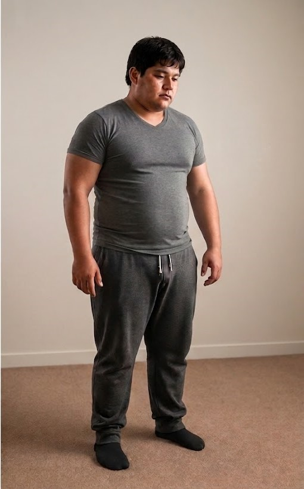
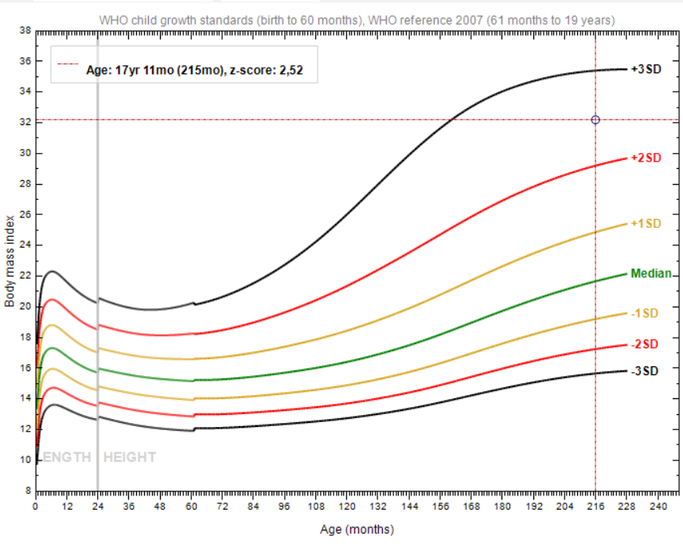
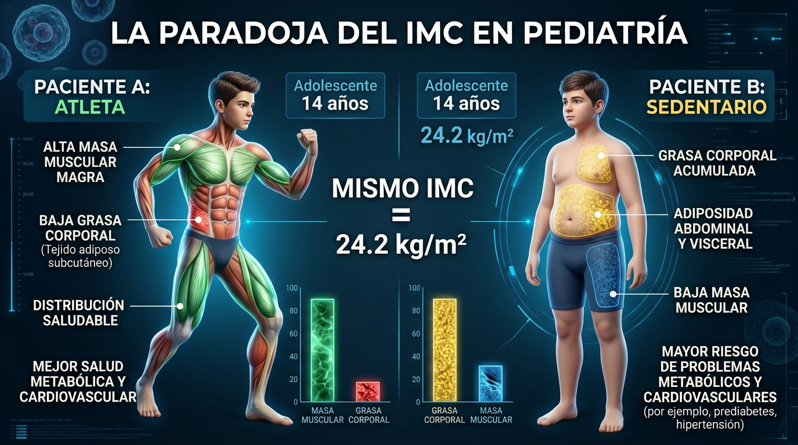
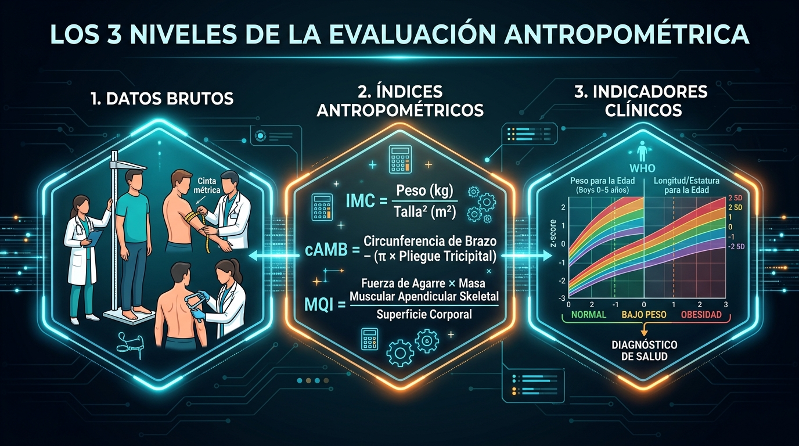
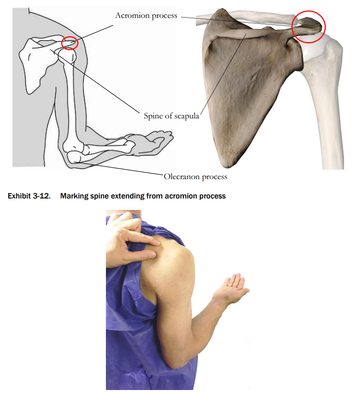
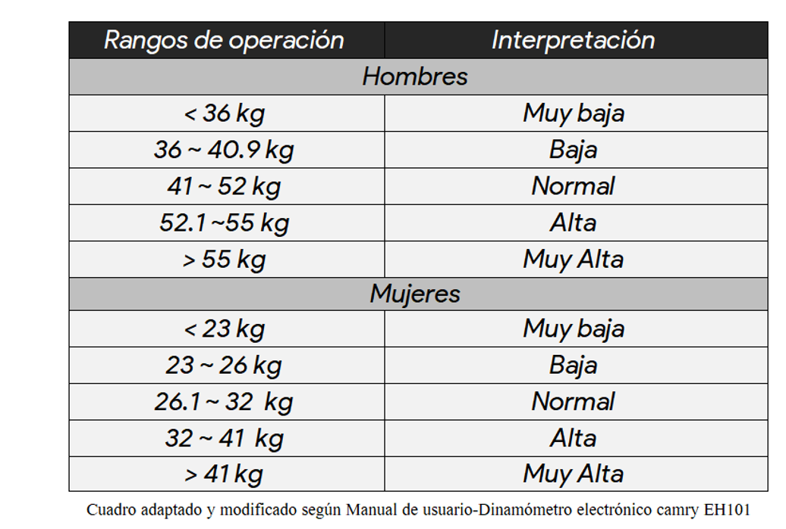
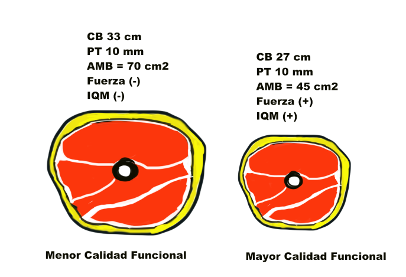

¡Bienvenidos a la Clase!
Escaneen el código QR con la cámara de su celular para registrar su asistencia:



Evaluación Antropométrica (5 a 19 Años)
Protocolos Estandarizados, Composición Corporal y Calidad Muscular (MQI)
1. Datos Brutos
Mediciones directas de campo (Talla, Perímetros, Pliegues, Dinamometría).
2. Índices
Modelos matemáticos (IMC, cAMB, MQI, ICE).
3. Indicadores
Diagnóstico clínico frente a estándares OMS 2007, CDC y Frisancho.
La Paradoja del IMC: Mismo Peso, Distinta Composición
Ambos pacientes: 14 años | Mismo IMC = 24.2 kg/m² (+1.5 DE - Sobrepeso según OMS)

Paciente A (Atleta)
Paciente B (Sedentario)
Los 3 Niveles de la Evaluación Antropométrica
Del instrumento físico al juicio clínico:

1. Datos Brutos
Magnitudes directas: Peso (kg), Talla (cm), Perímetro (cm), Pliegue (mm), Fuerza (kg).
2. Índices
Ecuaciones matemáticas: IMC (kg/m²), cAMB (cm²), MQI (kg/cm²), ICE.
3. Indicadores
Diagnóstico frente a tablas y curvas percentilares (OMS 2007, Frisancho, CDC).
Hitos Anatómicos y Referencias de Marcación
Identificación obligatoria previa con lápiz dermográfico:
1. Punto Acromial
Borde superior externo del acromion.

2. Marca Mesobraquial
Punto medio acromion-olécranon (90°).

3. Cresta Ilíaca
Línea axilar media (Cintura).

Fuerza de Prensión Manual (Camry EH101)
Biomarcador de capacidad contráctil y reserva funcional:

Área Muscular del Brazo Corregida (cAMB)
Estimación del área de sección transversal muscular libre de hueso:
(Corrección: 10.0 en Varones | 6.5 en Mujeres)
¿Por qué corregir por hueso?
La fórmula clásica sobreestima masa muscular. Heymsfield demostró que el húmero ocupa un área fija que debe deducirse según el sexo biológico.
Percentiles Frisancho (1990)
• P15 a P85: Muscularidad Adecuada (Promedio)
• > P95: Alta Muscularidad / Hipertrofia
Índice de Calidad Muscular (MQI)
Cuantifica la fuerza generada por cada cm² de área muscular magra:


Patrones Diagnósticos de Referencia
Sistemas normativos para el informe antropométrico:
IMC para la Edad
OMS 2007 (5 a 19 Años)
• Z +1 a +2: Sobrepeso
• Z -2 a +1: Eutrófico
• Z < -2: Delgadez
Muscularidad cAMB
Frisancho / NHANES
• P5 - P15: Abajo del Promedio
• P15 - P85: Adecuado
• > P95: Hipertrofia
Riesgo Central (ICE)
Cintura / Estatura
• ICE ≥ 0.50: Riesgo Cardiometabólico Aumentado